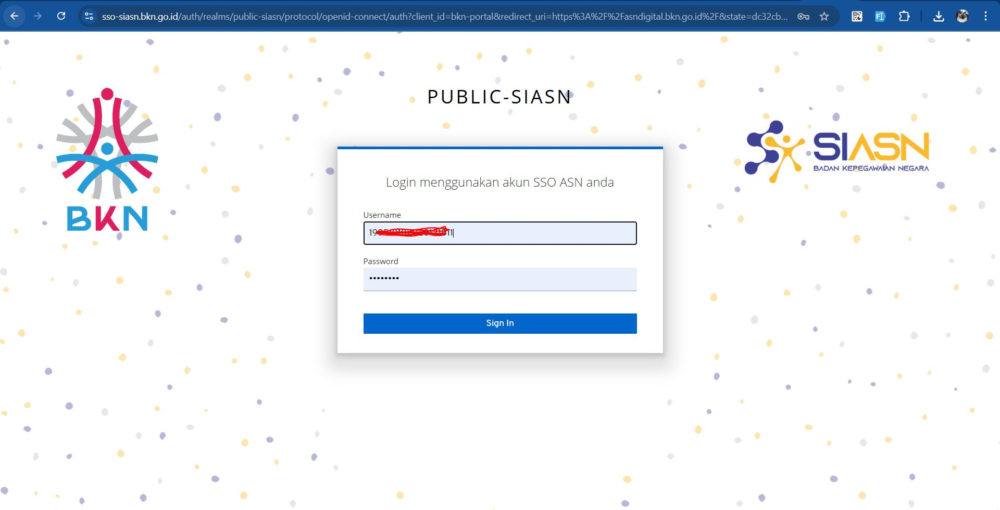

Daftar Isi
- A. Dasar Hukum
- B. Persiapan Sebelum Menggunakan MyASN
- C. Prosedur Pemutakhiran Data Mandiri
A. Dasar Hukum
- Peraturan Presiden Nomor 95 Tahun 2018 tentang Sistem Pemerintahan Berbasis Elektronik (SPBE).
- Keputusan Kepala BKN Nomor 87 Tahun 2021 tentang Pemutakhiran Data Mandiri.
- Surat Edaran Kepala BKN Nomor 17 Tahun 2022 tentang Implementasi Layanan Manajemen ASN Berbasis Digital Menggunakan Aplikasi MyASN.
B. Persiapan Sebelum Menggunakan MyASN
1. Aktivasi Autentikasi Dua Faktor (MFA)
Sebelum dapat login, Anda wajib mengaktifkan MFA.
a. Unduh Aplikasi Authenticator
Pilih salah satu aplikasi di bawah ini pada ponsel Anda:
- Google Authenticator
- 2FA Authenticator (alternatif)
b. Tautan Panduan Video
- Panduan Aktivasi MFA
- Panduan Reset Password (jika lupa/ingin ganti)
2. Kontak Bantuan (BKPSDM Kota Pariaman)
Jika memerlukan bantuan, hubungi Staf BKPSDM Kota Pariaman Bidang Mutasi dan Informasi sesuai dengan Perangkat Daerah Anda:
Nila Sumarni, S.Sos, M.Si (Analis SDM Aparatur Ahli Muda) - 082176961632
Bertanggung jawab untuk Perangkat Daerah:
- SEKRETARIAT DAERAH
- DINAS KESEHATAN
- DINAS PERINDUSTRIAN, PERDAGANGAN, KOPERASI DAN UKM
- DINAS SATPOL PP DAN DAMKAR
- KECAMATAN PARIAMAN SELATAN
- KECAMATAN PARIAMAN TENGAH
- KECAMATAN PARIAMAN TIMUR
- KECAMATAN PARIAMAN UTARA
Rival Putra Yusni, ST (Penata Kelola Sistem dan Teknologi Informasi) - 081220576433
Bertanggung jawab untuk Perangkat Daerah:
- BADAN KEPEGAWAIAN DAN PENGEMBANGAN SUMBER DAYA MANUSIA
- BADAN PENANGGULANGAN BENCANA DAERAH
- BADAN PENGELOLAAN KEUANGAN DAN PENDAPATAN DAERAH
- BADAN PERENCANAAN, PENELITIAN DAN PENGEMBANGAN DAERAH
- DINAS KEPENDUDUKAN DAN PENCATATAN SIPIL
- DINAS KOMUNIKASI DAN INFORMATIKA
- DINAS PARIWISATA DAN KEBUDAYAAN
- DINAS PEKERJAAN UMUM, PENATAAN RUANG DAN PERTANAHAN
- DINAS PEMBERDAYAAN MASYARAKAT DAN DESA
- DINAS PEMBERDAYAAN PEREMPUAN, PERLINDUNGAN ANAK DAN KB
- DINAS PENANAMAN MODAL, PTSP DAN TENAGA KERJA
- DINAS PERHUBUNGAN
- DINAS PERPUSTAKAAN DAN KEARSIPAN
- DINAS PERTANIAN, PANGAN DAN PERIKANAN
- DINAS PERUMAHAN RAKYAT, KAWASAN PERMUKIMAN DAN LH
- DINAS SOSIAL
- INSPEKTORAT
- KANTOR KESBANGPOL
- SEKRETARIAT DEWAN PERWAKILAN RAKYAT DAERAH
Ego Dafma Dasa, S.Kom (Penata Kelola Sistem dan Teknologi Informasi) - 089519649316
Bertanggung jawab untuk Perangkat Daerah:
- DINAS PENDIDIKAN PEMUDA DAN OLAHRAGA
1. Mengakses Akun MyASN
- Buka asndigital.bkn.go.id.
- Klik "Login", lalu klik "Masuk".
- Masukkan NIP dan Password, lalu klik "Sign In". 
- Masukkan kode OTP dari aplikasi authenticator Anda.
- Klik logo BKN di tengah layar.
- Klik "Layanan Individu ASN", lalu pilih "MyASN".
2. Langkah Wajib Awal: Mengatur Unit Verifikasi
Ini adalah langkah KRUSIAL agar setiap data yang Anda ajukan dapat diverifikasi oleh BKPSDM Kota Pariaman.
- Di halaman utama MyASN (Home), fokus pada bagian "Update Data". Kemudian, gulir ke bawah dan klik "Lihat Semua".
- Pastikan unit verifikasi yang tertera adalah "BADAN KEPEGAWAIAN DAN PENGEMBANGAN SUMBER DAYA MANUSIA".
- Jika belum sesuai:
- Klik tombol "Ubah".
- Di kolom pencarian, ketik "badan kepegawaian dan pengembangan sumber daya manusia".
- Klik "Pilih" pada hasil yang muncul, lalu klik "Simpan".
3. Memperbarui Profil Pribadi (Wajib)
- Akses Menu: Dari halaman "Update Data", klik ikon "Riwayat Ubah Profile".
- Proses Pembaruan: Lengkapi semua bagian dari atas ke bawah.
A. Informasi Utama (Foto Profil)
- Klik pada area foto untuk mengunggah foto formal terbaru.
- Ketentuan: Pakaian dinas/jas, background warna cerah, max 500 KB.
- Setelah mengganti foto, klik tombol "Simpan" di bawah foto.

B. Kontak Pribadi
- Gulir ke bawah dan lengkapi semua kolom bertanda bintang (*).
- Klik tombol "Simpan" di bagian ini setelah selesai.
C. Data Pendukung
- Gulir ke bawah, isi NIK & No. KK, lalu klik tombol verifikasi.
- Lanjutkan mengisi data lain bertanda bintang (*).
- Klik tombol "Simpan" di paling bawah halaman.
4. Update Data Mandiri ✅
Untuk riwayat di bawah ini, Anda dapat menambah data baru secara mandiri melalui tombol "+ Tambah Baru" atau klik tombol UBAH DATA.
- Riwayat Diklat Struktural
- Riwayat Jabatan
- Riwayat Keluarga
- Riwayat Organisasi
- Riwayat Penghargaan
- Riwayat Profesi
- Riwayat Sertifikasi
- Riwayat SKP
5. Update Data Via BKPSDM üìû
Riwayat di bawah ini tidak bisa diubah mandiri. Jika ada kesalahan, periksa dokumen dan hubungi narahubung BKPSDM Kota Pariaman.
- Riwayat Angka Kredit
- Riwayat CLTN
- Riwayat CPNS/PNS
- Riwayat Hukuman Disiplin
- Riwayat Laporan Kinerja
- Riwayat Pangkat & Golongan
- Riwayat Peninjauan Masa Kerja
- Riwayat Pindah Instansi
- Riwayat Pendidikan